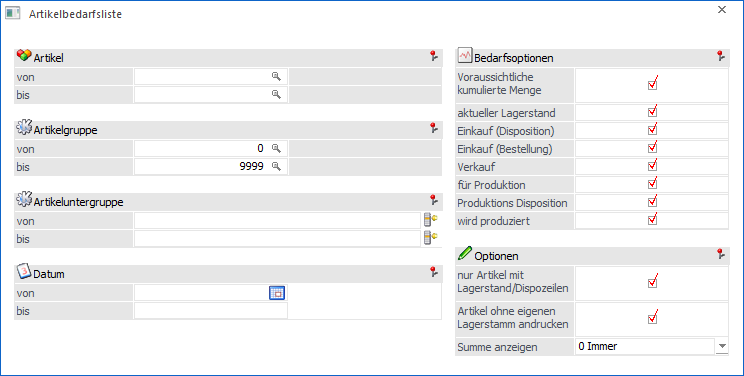
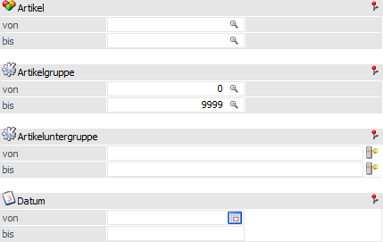
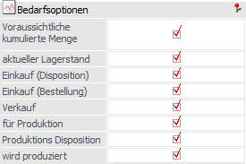
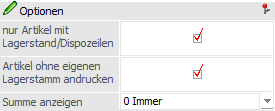
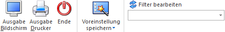
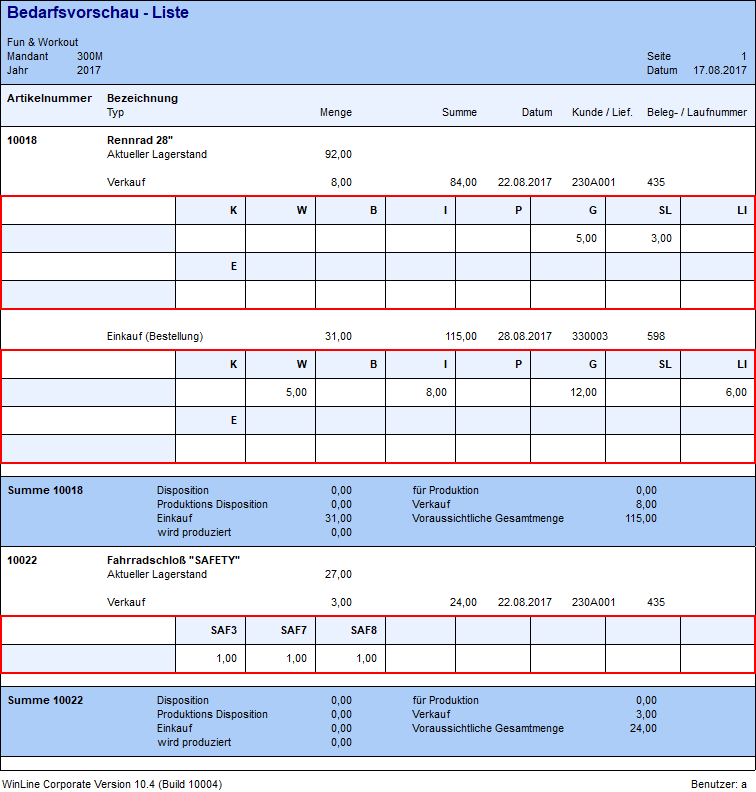

Die Artikelbedarfsliste kann im Menüpunkt…
1 WinLine FAKT
1 Einkauf
1 Artikelbedarfsliste
… aufgerufen werden. Innerhalb dieser Auswertung wird der voraussichtliche Artikelbedarf zu einem bestimmten Zeitpunkt ausgewiesen.

Folgende Eingabefelder und Einstellung stehen zur Verfügung:
Selektion

Ø Artikel von / bis
An dieser Stelle kann eine Selektion auf die auszuwertenden Artikel vorgenommen werden.
Hinweis
Wird im Feld "Artikel von / bis" z.B. nur eine Artikelnummer eingegeben und dieser Artikel hat auch noch Ausprägungen, so werden alle Ausprägungen automatisch mit angedruckt. Nur wenn während des Anklickens des "Ausgabe-Buttons" die STRG-Taste gedrückt wird, wird nur der Hauptartikel alleine ausgewertet.
Ø Artikelgruppe von / bis
In diesen Feldern kann nach den Artikelgruppen eingeschränkt werden, welche in der Liste berücksichtigt werden sollen.
Ø Artikeluntergruppe von / bis
In diesen Feldern kann nach den Artikeluntergruppen eingeschränkt werden, welche in der Liste berücksichtigt werden sollen.
Ø Datum von / bis
An dieser Stelle kann eine Eingrenzung des Zeitraums, für welchen der Artikelbedarf errechnet werden soll, erfolgen.
Bedarfsoptionen

In diesem Bereich kann selektiv ausgewählt werden, welche Einflussfaktoren auf den Artikelbedarf berücksichtigt werden sollen.
Ø Voraussichtliche kumuliert Menge
Sollte nur ein bestimmter Zeitabschnitt betrachtet werden, dann ist es sinnvoll, den voraussichtlichen kumulierten Lagerstand zu Beginn der Beobachtungsperiode auszuweisen. Von diesem Lagerstand ausgehend werden sämtlichen Aktionen (Lagerabgänge, Lagerzugänge) in dem Beobachtungszeitraum (Eingabefelder "Datum von / bis") nachgerechnet und in der Auswertung dargestellt.
Ø aktueller Lagerstand
Durch Aktivierung dieser Option wird der aktuelle Lagerstand (unabhängig von dem Beobachtungszeitraum) ausgewiesen.
Ø Einkauf (Disposition)
Bei Dispositions-Zeilen dieses Typs handelt es sich um Bedarfszeilen, bei denen eine Bestellung geplant, aber noch durchgeführt wurde. Solche Zeilen können wie folgt erzeugt werden:
ü Automatischer Bestellvorschlag
ü Erfassung eines Auftrags mit Artikeln des Reservierungstyps "1 - Auftragsbezogenen Produktion / Bestellung"
Achtung
In der Belegart muss die Option "Auftragsbezogene Produktion/Bestellung" aktiviert sein.
ü Anwahl des Tabellenbuttons "Datum übernehmen" (Tabelle "Lieferanten")
Ø Einkauf (Bestellung)
Sobald eine Lieferantenbestellung (Belegstufe "6 - L.Bestellung") gedruckt bzw. gerechnet wurde - und in der Belegart die Option "Bestellbestand verändern" aktiviert ist - handelt es sich um eine Dispositions-Zeile dieses Typs.
Ø Verkauf
Sobald eine Kundenauftragsbestätigung (Belegstufe "2 - Auftrag") gedruckt bzw. gerechnet wurde - und in der Belegart die Option "Bestellbestand verändern" aktiviert ist - handelt es sich um eine Dispositions-Zeile dieses Typs.
Ø für Produktion
Artikel können nicht durch direkt Verkauf, sondern auch für die Herstellung von Produktionsartikel oder Handelsstücklisten benötigt werden. In solch einen Fall spricht man von einer sogenannten Komponente.
Wird ein Produktionsauftrag in der WinLine PPS erzeugt oder ein Auftrag mit einer Handelsstückliste / einem Produktionsartikel in der WinLine FAKT angelegt, so wird der Bedarf an dem Artikel (d.h. der Komponente) mit Hilfe solch einer Dispositionszeilen angezeigt.
Achtung
Wird die Handelsstückliste bzw. der Produktionsartikel "vom Lager" genommen, so wird keine "für Produktion"-Zeile erzeugt.
Ø Produktions Disposition
Bei Dispositions-Zeilen dieses Typs handelt es sich um Bedarfszeilen, bei denen ein Produktionsauftrag geplant, aber noch eingelastet wurde. Solche Zeilen können wie folgt erzeugt werden:
ü Automatischer Bestellvorschlag
ü Erfassung eines Auftrags mit Produktionsartikeln des Reservierungstyps "1 - Auftragsbezogenen Produktion / Bestellung" und der Option "Stücklistenfenster nicht öffnen"
Achtung
In der Belegart muss die Option "Auftragsbezogene Produktion/Bestellung" aktiviert sein.
Ø wird produziert
Sobald für einen Produktionsartikel ein Auftrag im Modul WinLine PPS eingeplant wurde, so wird für diesen Artikel eine Dispositionszeile des Typs "wird produziert" erzeugt.
Handelt es sich bei dem Artikel um eine Handelsstückliste und es wird für diese ein Auftrag erzeugt, so wird ebenfalls eine "wird produziert"-Zeile generiert.
Achtung
Wird die Handelsstückliste bzw. der Produktionsartikel "vom Lager" genommen, so wird keine "wird produziert"-Zeile erzeugt.
Optionen

Ø nur Artikel mit Lagerstand/Dispozeilen
Ist diese Option aktiviert, so werden nur Artikel angezeigt, die einen Lagerstand größer 0 oder Dispozeilen haben.
Ø Artikel ohne eigenen Lagerstamm andrucken
Ist diese Option aktiv, dann werden auch die Artikel angedruckt, welche vom Lagerstamm her auf einen anderen Artikel verweisen. Ist die Option hingegen inaktiv, so werden die Dispozeilen bei dem Artikel angezeigt, wohin der Lagerstamm verweist.
Ø Summe anzeigen
Wurde die Bedarfsoption "aktueller Lagerstand" aktiviert, so kann mit Hilfe der Option "Summe anzeigen" die Ausgabe des Artikelsummenblocks gesteuert werden.
ü 0 - Immer
Es wird immer ein
Summenblock ausgegeben.
ü 1 - Nur bei vorhandener
Disposition
Der Summenblock wird nur ausgegeben, wenn der Artikel über
irgendeine Disposition verfügt. Hierbei werden die Einstellung unter
"Bedarfsoptionen" berücksichtigt.
Beispiel
Ein Artikel verfügt über einen Lagerstand und Dispositionszeilen des Typs "Verkauf". Wird vor der Ausgabe unter "Bedarfsoptionen" die Option "Verkauf" deaktiviert, so wird bei dem Artikel nur der Lagerstand gedruckt und dadurch auch kein Summenblock ausgegeben.
Buttons

Ø Ausgabe Bildschirm
Mit Hilfe des Buttons "Ausgabe Bildschirm" oder der Taste F5 wird die Auswertung am Bildschirm ausgegeben.
Ø Ausgabe Drucker
Durch Anwahl des Buttons "Ausgabe Drucker" wird die Auswertung am Drucker ausgegeben.
Ø Ende
Mit dem Button "Ende" bzw. der Taste ESC wird der Menüpunkt geschlossen.
Ø Voreinstellung speichern
Durch Anwahl dieses Buttons erfolgt eine benutzerspezifische Speicherung aller im Fenster getätigten Einstellungen. Diese sogenannten "Voreinstellungen" können jederzeit wieder abgerufen werden und ermöglichen dadurch ein schnelleres und zielorientierteres Arbeiten (nähere Informationen entnehmen Sie bitte dem Kapitel "Die Voreinstellungen").
Ø Filter bearbeiten
Durch Anklicken des Buttons "Filter bearbeiten" kann die Artikelbedarfsliste nach frei definierbaren Kriterien eingeschränkt werden.
Hinweis - Druck von Ausprägungen
Bei Ausgabe der Artikelbedarfsliste gibt es die Möglichkeit so genannte SUB-Formulare zum Ausdruck zu verwenden, um Ausprägungsartikel in Rasterform darzustellen zu können.
Dabei werden die Artikel nach ihrer "Herkunft" (Einkauf, Verkauf, Disposition), Kundennummer und Laufnummer ausgegeben.

Voraussetzung um diese Rasterform zu verwenden ist, dass im Menüpunkt "Ausprägungsoptionen" (Bereich "Drucken") beim jeweiligen Artikeltyp die Option "Subformular verwenden" aktiviert wurde.
Des Weiteren darf KEIN Sortierkriterium (einzustellen mittels Filterfunktion) verwendet werden!
Als Formular zum Rasterdruck kann jenes mit dem Formularnamen "P02W99W113EXT" verwendet werden. Dieses Formular ist in der Standardauslieferung bereits als SUB-Formular im Formular "P99W113A" hinterlegt, welches wiederum für den Druck verwendet wird.